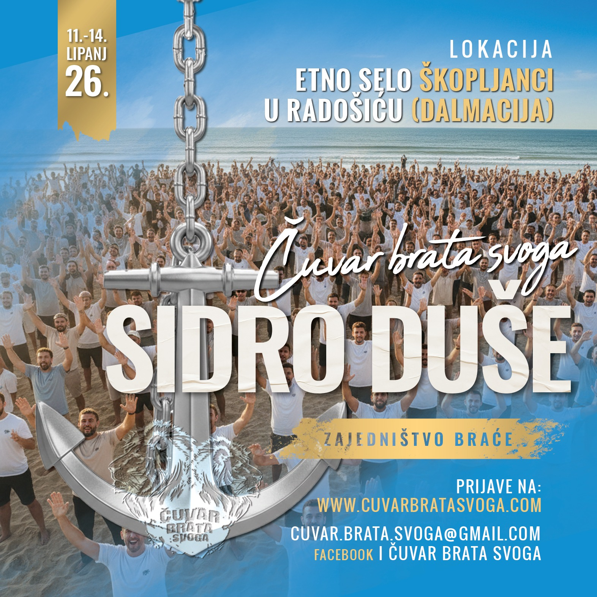

Čuvar brata svoga Sidro duše
„Ta nada je pouzdano i čvrsto sidro naše duše, ona prodire iza zavjese, kamo je, kao naš prethodnik, ušao Isus…“Hebrejima 6:19–20
- Kada
- 11. – 14. 6. 2026.
- Gdje
- Etno selo Škopljanci
- Mjesto
- Radošić, Dalmacija

Draga braćo
Milost i mir od Boga, našeg Oca, i našeg jedinog Gospoda Isusa Krista neka su sa svima vama.
Radujemo se što vas možemo pozvati na ovogodišnje okupljanje braće iz regije „Čuvar brata svoga“ u Hrvatskoj – Dalmaciji, u Etno selu Škopljanci u mjestu Radošić.
Ovo je već 17. godina zaredom da se okupljamo. Kroz sve ove godine nebeski Otac nas je blagoslivljao, izgrađivao, vježbao i oblikovao da budemo muškarci kakvima nas je Bog zamislio. Upravo je to glavna svrha ČBS-a: ulagati u izgradnju muškog dijela Kristovog Tijela u regiji.
Koje su istine, duhovna područja, situacije i odnosi u kojima muškarac treba usidriti svoju dušu i ne dopustiti ikome da ga pomakne? Kako prepoznati Božje vrijeme kada treba „dići sidro” iz nekog mjesta, odnosa ili službe? To ćemo zajedno proučavati i pomagati jedni drugima rasti u tome.
Pozivamo sve pastire i braću da ohrabre Božje muškarce u svojim zajednicama i gradovima da dođu na ovaj, za Tijelo Kristovo u regiji, veoma važan skup.Organizacijski tim ČBS-a
Blago vojni stil
Vjerujemo da nijedna vojska, pa ni Kristova, ne može imati velike uspjehe ako ne otkrije blagoslov, potencijal i nužnost istinske discipline.
Zajedničko buđenje
Postrojavanje, himna, molitva i fiskultura svako jutro.
Riječ i radionice
Jutarnji i večernji program, propovijedi i radionice na temu okupljanja.
Život u šatorima
Smještaj u šatorima u etno selu – jednostavno, zajedno, po muški.
Bratstvo
Molitveni šator, slobodne aktivnosti i druženje do kasno u noć.
Četiri dana zajedno
Registracija počinje u četvrtak, 11. 6., od 14:00 sati.
| Vrijeme | Četvrtak11. 6. | Petak i subota12. – 13. 6. | Nedjelja14. 6. |
|---|---|---|---|
| 06:00 | Dolazak · od 14:00 registracija i smještaj | Molitveni šator | Molitveni šator |
| 07:00 | Buđenje i osobna higijena | Buđenje i osobna higijena | |
| 07:30 | Postrojavanje, himna, molitva, fiskultura | Doručak | |
| 08:00 | Doručak | Jutarnji program (od 8:30) | |
| 09:00 | Jutarnji program | ||
| 10:30 | Pauza | Lanč paket i odlazak | |
| 11:00 | Radionice | ||
| 12:45 | Ručak | ||
| 13:00 | Slobodne aktivnosti | ||
| 18:30 | Večera | Večera | |
| 20:00 | Večernji sastanak | Večernji sastanak petak: grupe do 35 i preko 35 god. | |
| 22:00 | Druženje | Druženje | |
| 24:00 | Tišina u kampu | Tišina u kampu |

Što je uključeno
Online prijava je obavezna. Plaćanje je moguće isključivo u eurima.
Kotizacija
80€Sudjelovanje na okupljanju, hrana i majica.
Smještaj
40€Šator u etno selu, tri noćenja. Spavaš izvan kampa? Plaćaš samo kotizaciju.
Akontacija
20€Nepovratna. Uplatom akontacije prijava postaje važeća.
Otac i sin
−50%Sinovi do 18 godina imaju 50 % popusta. Treći i svaki sljedeći sin – besplatno.
Prijavi se online
Ispuni obrazac za prijavu. Nakon toga stiže e-mail s uputama za uplatu.
Uplati akontaciju
20 € na račun za svoju državu (vidi uplate) – time je prijava potvrđena.
Ostatak na registraciji
Pri dolasku plaćaš ostatak kotizacije (60 €) i smještaj (40 €) ako spavaš u etno selu.
Rezerviraj svoje mjesto
Vidimo se dogodine
Prijava traje dvije minute. Pitanja? Piši nam na cuvar.brata.svoga@gmail.com.
Prijave za sljedeće okupljanje otvaramo čim objavimo datum i mjesto. Prati nas na Facebooku da ne propustiš.
Vabilo v slovenščini
Dragi bratje, veselimo se, da vas lahko povabimo na letošnje srečanje bratov iz regije »Varuh svojega brata«, ki bo potekalo na Hrvaškem, v Dalmaciji, v etno vasi Škopljanci v kraju Radošić. To je že 17. srečanje zapored. Tema srečanja bo SIDRO DUŠE (Heb 6,19–20).
Kotizacija znaša 80 € (udeležba, hrana in majica). Nastanitev v šotorih v etno vasi stane 40 € za tri nočitve. Po spletni prijavi plačate nepovratno akontacijo 20 €, s čimer postane prijava veljavna; preostanek plačate ob registraciji. Sinovi, mlajši od 18 let, imajo 50 % popusta, tretji in vsak naslednji sin je brezplačen.
Etno selo Škopljanci
Radošić, Dalmacija
Smještaj je u šatorima u etno selu. U Kaštelanskom zaljevu, u sedam Kaštela, nalaze se i tisuće apartmana – tko želi, može s nekoliko braće pronaći povoljan apartman u vlastitom aranžmanu.
Uplata akontacije po državama
Odaberi svoju državu. Ako uplaćuješ za više osoba, pošalji imena kontakt osobi za svoju državu.
Imaš pitanje?
Facebook i Messenger
Tvoja država
Javi se kontakt osobi u svojoj zemlji – popis je u odjeljku Uplate.